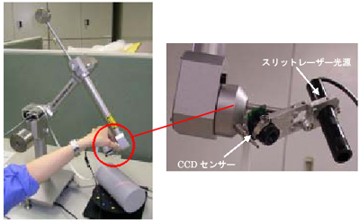

3Dオブジェクト・モデリング
立体物を3次元モデル化する方法として、多くの形状計測法が提案されています。 しかしながら、ハイビジョン放送のコンテント制作用の立体映像部品の作成を可能とする 高精細な計測法は、未だ確立されていません。
また、立体映像部品をコンテント制作に利用するには、それが任意の照明条件下の 映像として再構成できる必要があり、そのためには立体物のテクスチャの取得と 表面反射パラメータの抽出が不可欠で、大きな課題とされてきました。
次世代コンテント研究室では、上記２つの要件を満たすためには、 いわゆるイメージベースドモデリングの高度化等が必須と考え、 実写映像に基づいた立体物の精細な3次元形状の計測方法、 及び、実写映像の信号レベルの変化から表面反射パラメータ取得方法の 研究開発を進めています。
立体物形状の高精細な計測法として、 回転テーブル上に置いた立体物を指定した角度で撮影し、 得られた複数のフレーム画像から、高精細の立体物の形状データを取得する 「2段階のブロックマッチング法」を開発、提案しています。 （図１に2段階のマッチングによる精度向上をグラフで示します）
|
|
この「2段階のブロックマッチング法」のために、以下の改善を行っています：
・計測誤差の低減法
・マッチング検出感度の向上法
・異なったズーム比での計測法
・オクルージョン領域の低減法
また、より効率的な計測法の開発に向けて：
・ロボットアームによる高精細３次元形状計測装置の開発（図２）
を行っています。
|  |
|
|
また、立体物のテクスチャの取得としては、 実写ベーステクスチャマップ作成法の構築し（図３）、 表面反射パラメータの抽出方法としては、 形状と同様に、立体物の複数のフレーム画像を用いる手法を開発、提案しています。 このフレーム画像を、光源の設定（位置）を変えて撮像することで、 拡散反射成分と鏡面反射成分の分離に成功しています（図４）。
|
|
| 図４−反射成分の分離。（左）原画像、（中）拡散反射成分、（右）鏡面反射成分 |
そして、最新の研究として、ニューラルネットワークを利用した透明立体物の 3次元モデル化の研究も進めています（図５）。 透過や屈折といった物理現象を考慮する必要があり、非常に難しい研究ですが、 新しい研究内容として注目されています。
|
|
このページに関する問い合わせは info@adv3d.jp まで。